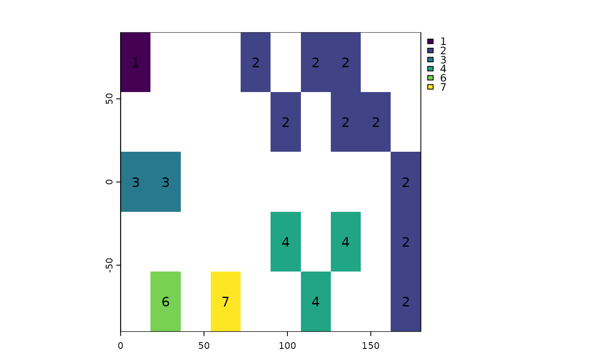

Detect patches (clumps) of cells
patches.RdDetect patches (clumps). Patches are groups of cells that are surrounded by cells that are NA. Set zeroAsNA to TRUE to also identify patches separated by cells with values of zero.
Usage
# S4 method for class 'SpatRaster'
patches(x, directions=4, values=FALSE, zeroAsNA=FALSE, allowGaps=TRUE, filename="", ...)Arguments
- x
SpatRaster
- directions
integer indicating which cells are considered adjacent. Should be 8 (Queen's case) or 4 (Rook's case)
- values
logical. If
TRUEuse cell values to distinguish patches. IfFALSE, all cells that are notNAare considered identical- zeroAsNA
logical. If
TRUEtreat cells that are zero as if they wereNA. Ignored ifbyvalue=TRUE- allowGaps
logical. If
TRUEthere may be gaps in the patch IDs (e.g. you may have patch IDs 1, 2, 3 and 5, but not 4). If it is FALSE, these numbers will be recoded from 1 to the number of patches (4 in this example)- filename
character. Output filename
- ...
options for writing files as in
writeRaster
Examples
r <- rast(nrows=18, ncols=36, xmin=0)
r[1:2, 5:8] <- 1
r[5:8, 2:6] <- 1
r[7:12, 22:36] <- 1
r[15:16, 18:29] <- 1
p <- patches(r)
# zero as background instead of NA
r <- rast(nrows=10, ncols=10, xmin=0, vals=0)
r[3, 3] <- 10
r[4, 4] <- 10
r[5, 5:8] <- 12
r[6, 6:9] <- 12
# treat zeros as NA
p4 <- patches(r, zeroAsNA=TRUE)
p8 <- patches(r, 8, zeroAsNA=TRUE)
### patches for different values
p <- patches(r, values=TRUE)
### patch ID values are not guaranteed to be consecutive
r <- rast(nrows=5, ncols=10, xmin=0)
set.seed(0)
values(r)<- round(runif(ncell(r))*0.7)
rp <- patches(r, directions=8, zeroAsNA=TRUE)
plot(rp, type="classes"); text(rp)

## unless you set allowGaps=FALSE
rp <- patches(r, directions=8, zeroAsNA=TRUE, allowGaps=FALSE)
plot(rp, type="classes"); text(rp)
### use zonal to remove small patches
f <- system.file("ex/elev.tif", package="terra")
r <- rast(f)
x <- classify(r, cbind(-Inf, 400, NA))
y <- patches(x)
# remove patches smaller than 100 ha
rz <- zonal(cellSize(y, unit="ha"), y, sum, as.raster=TRUE)
s <- ifel(rz < 250, NA, y)